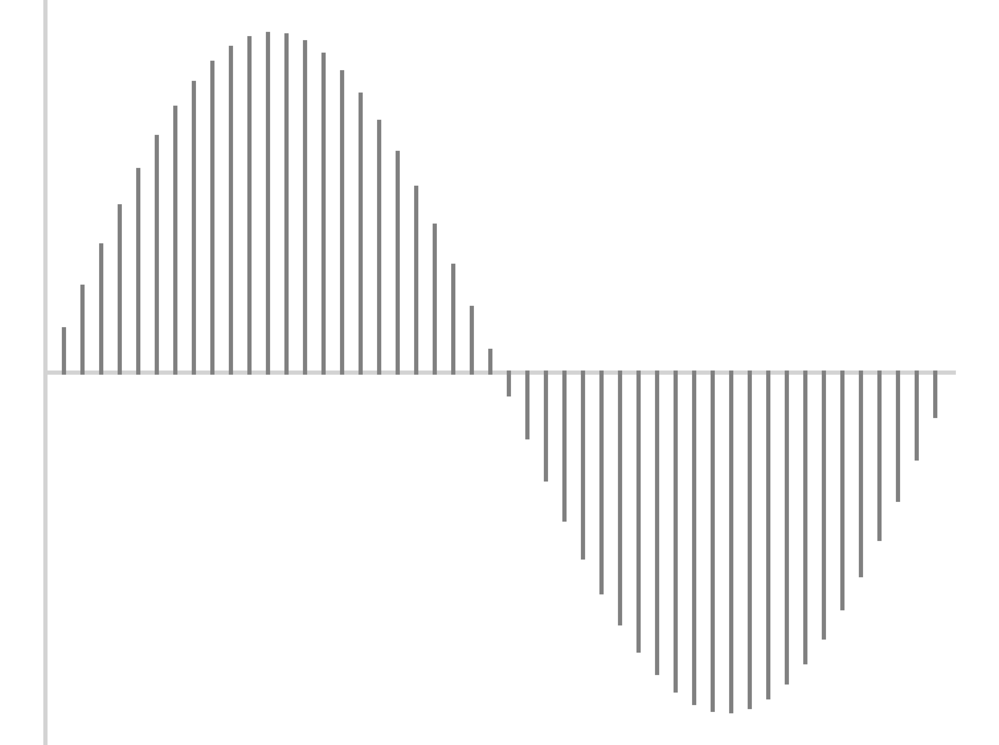
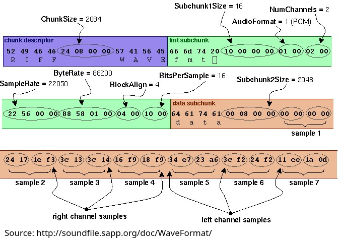

# Sound Formats and Compression ### Will Styler - LIGN 168 --- ### Let's back up for a moment - We've talked a bunch about how to display sound files - We've talked about how to measure sound files - We've even talked about how to manipulate sound files - ... but what is a sound file anyways? --- ### Today's Plan - Audio Capture Review - Uncompressed WAV Audio - Why we compress sound - Lossless Compression formats - Lossy Compression formats --- ## Audio Capture Review --- ### We know how sound is stored on computers - Electronic measurement of amplitude followed by quantization - This is also called 'Pulse Code Modulation' or PCM --- ### Quantization <img class="r-stretch" src="diagrams/sampling_perfectwave.png"> --- ### Quantization <img class="r-stretch" src="diagrams/sampling_sampled.png"> --- ### Quantization <img class="r-stretch" src="diagrams/sampling_withlines.png"> --- ### Quantization  --- ### So, at the end we have a list of samples - At a certain bit depth (e.g. precision of amplitude measurement) - ... along with a sampling rate - This gives rise to... --- ## Uncompressed Audio Files --- ### Uncompressed Audio Files are lists of samples - With a bit of metadata --- ### The Waveform Audio Format ('WAV') contains three parts - A Header chunk - A Format chunk - A Data Chunk - [Here's a great site describing in more detail](http://soundfile.sapp.org/doc/WaveFormat/) --- ### The WAV Header - The first 12 positions - 'This is a [RIFF](https://en.wikipedia.org/wiki/Resource_Interchange_File_Format) file' - The Filesize - This limits WAV to 4GiB, because it's a 32-bit integer - 'This is a WAVE format' --- ### The WAV Format Sub-Chunk - 'FMT', then the length of the format chunk - The Format of the data - 1 for PCM, everything else is compressed - The number of Channels - 1 for Mono, 2 for Stereo - The Maximum is 65535 - The sampling rate - 44100 for '44,100 Hz' - 1 Hz - 4.3 GHz are possible --- ### WAV Format Sub-Chunk Continued - The Byte Rate - (Sample Rate * BitsPerSample * Channels) / 8 - The BlockAlign - NumChannels * BitsPerSample/8 - Roughly 'the Number of bytes per sample across all channels' - The Bit Depth - 8 bit, 16 bit... --- ### WAV Data Sub-Chunk - 'DATA', then the length of this subchunk - Lots and Lots of Samples, with channels paired - This contains the actual audio! --- ### WAVE Files, Visualized  --- ### AIFF is basically the same idea - It's Apple's version of WAV - There are slight computational differences to the format - AIFF can carry more metadata, but isn't always supported by applications - **Changing from WAV to AIFF and back is easy and doesn't affect quality!** --- ### This is really simple - The sample data is *right there* and easy to read in - WAV has perfect fidelity - Nothing is lost saving as WAV - It's able to be very, very large - Up to 4GB, which is around 6 hours of 44,100/16 audio - [RF64](https://en.wikipedia.org/wiki/RF64) allows you to go larger - PCM data will always be able to be read, so it's *archival* - Doesn't require any fancy libraries or proprietary filetypes - WAV PCM is the dumbest, most replicable format possible - You don't spend any cycles *compressing the data* --- ### ... but it's really, really large - 44,100 16-bit datapoints per second - ~1400 kpbs (Kilobits per second) - ~10.5 megabytes per minute - **This is a lot to send** - Wait, what does sending look like anyways? --- ## Streaming vs. Static Audio --- ### Sending Audio can take two forms - Sending Complete files - Streaming the audio chunk-wise --- ### Sending Complete files - I have a file, and you ask me for it - I transmit the entire file to you, whole - Once it downloads, you store it on your device - You play back the file --- ### Streaming Audio - Break the audio into chunks of a sensible size - Spotify uses 512kB, ~4 seconds - Send the audio chunk-by-chunk to the device when it starts playback - *Buffer* the chunks on the local device in case of slowdowns or losses - *Play back* the file from the buffer, adding new chunks as they arrive - You've got the whole file at the end, if all chunks are streamed --- ### Streaming has lots of benefits - You don't send the whole file if they don't ask for it - "Wow, this podcast is awful" - "I want to jump to this chapter" - You can stream a file larger than they can store - "Remove played chunks from the buffer after they're played" - You're not transmitting meaningfully more data - The cost of streaming a whole file is roughly the same as sending it - So, there's little downside - You don't have to download everything at once - "Why send his entire spotify library when he just keeps listening to Shpongle?" --- ### There are a few pain points - Streaming requires an active connection - If you disconnect from the network, you can only play your buffer - Streaming often doesn't give you the file at the end - This is an upside for content cartels, and a downside for consumers - Streaming is *synchronous* - Your servers have to be online all the time - Streaming means you *might send the same file twice* - "Really? OK, send 'In Keeping Secrets of the Silent Earth 3' AGAIN" - Streaming requires you to *send the file faster than it can be listened to* --- ### Streaming helps to make sending easier - ... but we still want to send sound in formats that are as small as possible - This usually involves making an Audio Codec --- ### What is a codec? Codecs encode and decode signals - (This is a portmanteau of encoder-decoder) - In the audio world, it encodes the sample amplitudes into a different and more space-efficient format --- ### Codecs aren't *quite* the same as audio formats - Audio file formats are packages including data in one or more codecs - All videos include audio which is stored or compressed with a codec - It's possible to have different codecs with the same 'file type' - Occasionally, this causes video files not to open with audio, or means files won't convert or work with your software - Many codecs are *compressed* --- ## Why we compress sound --- ### Why uncompressed formats suck - **Loading Data**: How long does it take to open a file, and how much RAM does it require? - **Storage Cost**: How much drive space do you need to store what you have? - **Bandwidth Cost**: How much data do you have to send to share a sound - **Bandwidth Limits**: How quickly can you send data? --- ### Loading Times - It takes longer to open a bigger file - It requires more disk reading and writing - This adds up in a system constantly reading and writing audio - Slow machines take longer to load larger files - Large files take more space in memory --- ### Storage Costs - Spotify has ~100,000,000 songs - The Average Song (3.5 minutes) is 37 Megabytes as a WAV file - Phones recording audio would quickly run out of space - The Base Model iPhone could store only 180 hours of WAV audio - Music Collections would be huge - My music collection is about 482.5 Hours - This is 300GB of music alone - Backing up data becomes more costly - Two is one, and one is none. Back up your computers, damnit. --- ### Bandwidth Costs - It's not free to send data into and out of data centers - [US Cell Provides charge some of the highest rates for data](https://www.victoriabuzz.com/2021/07/canada-ranked-the-worst-out-of-44-countries-for-the-cost-of-mobile-phones/) - ... and you don't want to use more data than you have to - Transferring larger files between machines 'clogs' internal networks more --- ### Bandwidth Limitations - [US Internet Providers are the among the worst in the developed world](https://broadbandnow.com/report/2018-fcc-international-data-insights) - Your Cell Phone can't necessarily 'keep up' with downloading uncompressed data - Some situations are even lower bandwidth (e.g. radio transmission, satellite calls) - Smaller audio formats mean more people can be served by the same server/cell tower --- ### So, we want our audio files to be small - We want our audio files to take up *as little space as we can get away with* - We want our voice and audio transmissions to use *as little bandwidth as we can* - We want to be able open files *even on crappy computers* - We need to be able to stream audio *faster than it can be listened to* --- ### This forces us to use *compression* - Compression just turns a file into a smaller file with either... - Exactly the same amount of information (**Lossless Compression**) - Less information, but losing things you likely don't care about (**Lossy compression**) - Compression has a computational cost! - The file must be encoded, and decoded - Greater compression generally requires greater computation on both ends --- ## Lossless Compression --- ### Aside: Data Compression is a huge field - You could spend a career here - Better data compression could make you a billionaire - This was the plot of [Silicon Valley](https://en.wikipedia.org/wiki/Silicon_Valley_(TV_series)) - We are just barely scratching the surface, and focusing on audio - **File compression technology is incredibly cool** --- ### Lossless Audio Compression preserves *the exact signal* - "How can we make this audio smaller, while retaining every last bit of information we started it" - Lossless audio compression throws away nothing - You should be able to recover *the exact PCM signal* from a lossless file - Turning a losslessly compressed file back into WAV is trivial and easy --- ### The Dumbest Approach: File Compression - Use file compression tools designed for other files (e.g. zip, 7z, zstd, rar) - Zip the WAV file, and then unzip it before playing - **DO NOT DO THIS** - It works fine, but it is dumb - This achieves very poor compression, and requires you to undo it for each listening - Files will be ~80-90% of the original file size --- ### The Smartest Approach: FLAC - FLAC is the 'Free, Lossless Audio Codec' - Developed by [the Xiph.org Foundation](https://en.wikipedia.org/wiki/Xiph.Org_Foundation) - It's a free (as in libre and gratis) way to compress audio files - This results in .flac files --- ### The FLAC Process - Step 1: Split the audio into frames - Step 2: Approximate the frames - Step 3: Find the residuals - Step 4: Encode the residuals - Step 5: Save the result --- ### FLAC Step 1: Framing - Break the file into frames, with a default of 4096 samples - For stereo, each channel will be a subframe - The frame size is tunable for better compression - Because it's done framewise, it's *well optimized for streaming!* --- ### FLAC Step 2: Approximation - Use either LPC or a polynomial fit to approximate the signal - Linear Predictive Coding does a great job of capturing the spectral shape - The Source/Excitation signal is modeled in the next step - Very simple frames (e.g. silence, or a single bass note) may be more easily approximated with a polynomial - This will get you *most of the way there* with very little data - Just the LPC coefficients, or a few numbers describing the polynomial - **You don't have to model the signal exactly in this step** --- ### FLAC Step 3: Finding the Residuals - You've stored *a big chunk of the signal* in *very little data* - Now subtract the modeled signal from the input signal - This yields a *much simpler* signal called the 'Residuals' --- ### FLAC Step 4: Encode the residuals - This is done using **Rice Coding** and other compression approaches - Black-box alert! - Intuition: We models the residuals more compactly when they're closer to zero - This means that better approximations make for better residual coding - Stereo tracks are analyzed in terms of their difference from one another - "Now we need to model what differs between left and right" - Residuals are stored *with zero data loss* - Compression comes from clever coding, not throwing data away --- ### FLAC Step 5: Save the resulting frame data - Each frame has LPC/Polynomial Coefficients, Channel Difference, and encoded residuals - Also save metadata (e.g. Sampling Rate, Bit Depth, Artist, Album, Song Name, Year, etc) --- ### FLAC Playback - Read the frame's data - Generate the signal represented by the LPC and Polynomial - Unpack the residuals and add them to the LPC signal - Create the other channel using the stored difference - Play back the waveform --- ### This is completely *lossless* - With the LPC and residuals, you can recover the *exact signal* and recreate the WAV - This is high fidelity - Tidal's [High Fidelity](https://tidal.com/sound-quality) mode is FLAC - You are just being clever in storing the waveform - Very, very clever! - **FLAC can reduce file sizes to 50-60% of the original!** --- ### FLAC isn't the only lossless codec - WavPack is neat - You get a small, compressed, lossy version and a *correction* file that can turn it back into a lossless version - It's also free and open - Dolby TrueHD is designed for multichannel audio - Designed for BluRay and Theatrical releases - 'Apple Lossless (ALAC)' is Apple's Lossless Codec - It is strictly worse than FLAC in nearly every way - ... but Apple won't support FLAC for some reason - **All are about equivalent in compression (50-60% of the WAV file size)** --- ### Sometimes, we need to compress more - ... and that means we need to resort to... --- ## Lossy Compression --- ### Lossless vs. Lossy Compression - Lossless compression asks "What can I do to make the file smaller while keeping the same exact data?" - Lossy compression asks "What can I throw away to make the file smaller while keeping the human from noticing?" - Lossy compression *is tuned to human perception*! - [mp3 was developed for Suzanne Vega's "Tom's Diner"](https://observer.com/2008/09/suzanne-vega-is-the-mother-of-the-mp3/) --- ### Lossy codecs are everywhere - mp3 is the most well known lossy codec - AAC is Apple's version - Opus and Vorbis are free and libre lossy codecs - LDAC, AAC, aptX are commonly used to send audio to bluetooth headphones - There are dedicated codecs for voice that we'll talk about next time! --- ### Lossy Compression throws away information strategically - Using things like Discrete Cosine Transform and LPC to capture the 'most important' elements - Also uses psychoacoustic knowledge - "The human won't be able to hear this part anyways" - "Let's throw away or simplify the stuff that doesn't matter as much to the human!" --- ### It's a lot like image compression! --- <img class="wide" src="phonmedia/compression1.jpg"> --- <img class="wide" src="phonmedia/compression2.jpg"> --- <img class="wide" src="phonmedia/compression3.jpg"> --- <img class="wide" src="phonmedia/compression4.jpg"> --- <img class="wide" src="phonmedia/compression5.jpg"> --- --- <img class="wide" src="phonmedia/compression7.jpg"> --- ### Here's what it looks like when you make it lossless again --- <img class="wide" src="phonmedia/compression7.jpg"> --- ### MP3 Encoding - Frame the data (mp3 is usually 1152 samples per frame) - Use a [Modified Discrete Cosine Transform](https://en.wikipedia.org/wiki/Discrete_cosine_transform) to turn the data into coefficients representing components in the frequency domain - Save more, less, or no detail for chunks of the signal *based on how humans perceive sound* - "This isn't critical, so let's save it with less precision" - "They'll never hear this quiet bit next to a loud one, so, yeeet!" - Now, save the coefficients efficiently - [Huffman coding](https://en.wikipedia.org/wiki/Huffman_coding) is used. --- ### You can choose how much to compress the sounds! - The *Bitrate* dictates how many bits are required to capture a second of audio - The unit is 'kbps', Kilobits per second - 'Variable Bitrate' (VBR) is the same idea, but adapts well to varied complexity - Lower bitrate means more compression, but more data loss - Store fewer coefficients and throw out more data - This is independent of bit depth! --- ### Sound Compression (Again, Shpongle 'Nothing is something worth doing') 1400kbps wav<audio controls src="phonmedia/nothingsomething.wav"></audio> 320kbps mp3 <audio controls src="phonmedia/nothingsomething320kbps.mp3"></audio> 192kbps mp3 <audio controls src="phonmedia/nothingsomething192kbps.mp3"></audio> 128kbps mp3 <audio controls src="phonmedia/nothingsomething128kbps.mp3"></audio> --- ### Sound Compression (Again, Shpongle 'Nothing is something worth doing') Uncompressed WAV <audio controls src="phonmedia/nothingsomething.wav"></audio> 64kbps mp3 <audio controls src="phonmedia/nothingsomething64kbps.mp3"></audio> 48kbps mp3 <audio controls src="phonmedia/nothingsomething48kbps.mp3"></audio> 32kbps mp3 <audio controls src="phonmedia/nothingsomething32kbps.mp3"></audio> 8kbps mp3 <audio controls src="phonmedia/nothingsomething8kbps.mp3"></audio> --- <video class="wide" controls src="video/bitrat.mp4"></video> Original from <https://www.youtube.com/watch?v=wBnevSbdb7g> --- ### Apple's AAC is very similar to mp3's approach - It just uses longer blocks, and a few other techniques to improve compression - It's more efficient, and yields better quality for the same filesize - It's not free, and not supported by as many devices --- ### Opus is a free and open MDCT-based codec - There are some tweaks, but it's the same basic idea - Quality is at or beyond mp3 at similar bitrates - and it supports a much wider set of bitrates - It's less widely supported, as it's newish (~2011) - "Free and open" matters because... --- ### Audio Codecs are full of patent trolls and lawyers - mp3 has had lots of battles with content cartels and patent trolls - [It was ugly and complicated](https://en.wikipedia.org/wiki/MP3#Licensing,_ownership,_and_legislation) - Most of the relevant patents expired in 2017, so it's basically free and open now - AAC is heavily patent encumbered until 2031 - Free and open implementations are hindered by patent trolling from Apple and others - Voice Codecs (next time) are a hellscape of licensing and patents - *insert gigantic rant about proprietary standards* --- ### Lossy compression of audio throws away data! - Compression is irreversible - Humans generally struggle to differentiate wav and >256kbps mp3 - Loss that you can't hear can still affect measurements of speech - Some measurements more than others - Lower bitrates will have stronger effects, but be careful! - What do we use for speech? --- ### These are general purpose codecs - They're meant to compress *anything* - ... and they're quite good at it - **Can we do better if we know we're encoding speech?** - Next time! --- ### Wrapping up - WAV is simplistic and samplistic - Compression is useful for working with audio - Lossless compression saves space and sacrifices **nothing** - Lossy compression makes much smaller files, but at a very real cost --- <huge>Thank you!</huge>